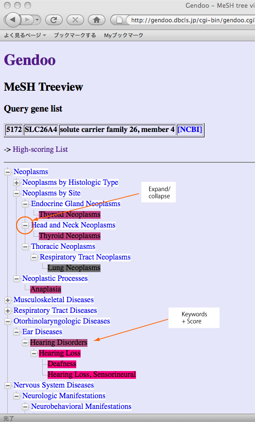

Gendoo (Gene, disease features ontology-based overview system) provides the keywords of disease, drug, biological phenomena, and anatomy associated with genes and diseases of your interest.
Gendoo utilizes a controlled vocabulary MeSH (Medical Subject Headings) as keywords. We are going to use Gene Ontology terms in addition to MeSH.
Gendoo accepts following items as input queries:
Gendoo currently uses descriptions of "title" and "alternative titles; symbols" sections of OMIM for disease name, so that not all synonyms are included in the dictionary such as "type 2 diabetes". We will increase the synonyms by involving canonical names and synonyms (entry terms) of corresponding MeSH terms, and extracting disease names from MEDLINE and OMIM resources with text mining approach.
Gendoo generates two views as result: high-scoring lists and hierarchical-tree view.
When input query is gene or disease name, candidate gene/OMIM list will be generated because the same name is referred to by several diseases, genes, and drugs. Please choose the items of your interests.

When input query is keywords, high-scoring lists of associated genes and diseases are generated.
The summary of searching process is as follows:
Please input Entrez Gene/OMIM ID to ID form of each category.

When you want to input multiple IDs or names, please input 1 ID/name per line to ID form.

Please click "Search" after inputting IDs or names.
High-scoring lists will be generated.
The significance of each association is illustrated by assigning background color according to their p-value. The scores are derived from frequency of documents co-occurring descriptions of genes/diseases and assigned MeSH keywords.
Note: "Sum score" (Information Gain) means the significance of association between "group" of genes or diseases and keywords. Gendoo shows this score only as a reference because the sum score is calculated briefly. Gendoo uses information gain as score for calculation of "sum score". The range of information gain is 0 to 1. The higher score means the larger significance of association. The score for group of diseases or genes should be derived from articles referred to any disease or gene in the group. However, the accurate calculation requires much time and machine power. Gendoo presently calculate sum scores by briefly summing up the information gain of each association instead of accurate calculation. To sum up p-values seem to be mathematically inconsistent as scores of genes and diseases groups. (We received the suggestion that sum score is confusing, so that we will delete the column in the next release.)

The values of p-value and information gain are shown by putting mouse pointer on each cell.
Gendoo also generates hierarchical-tree view by clicking "Tree View" link.

Following figure is a sample of hierarchical-tree view.
Gendoo currently assigns colors to the keywords of high-scoring list and hierarchical tree view in a differenct way. In high-scoring list, Gendoo assigns the colors to "each association" between genes or diseases and keywords, namely each cell of the table. On the other hand, in hierarchical tree view, Gendoo assigns the color according to the score of "group" of genes or diseases as sum score. We are modifying Gendoo programs to reduce the difference of colors between these views, and we will consider other way to assign colors to each keywords such as by their ranks.
To go back to high-scoring lists, click "High-scoring List" link.